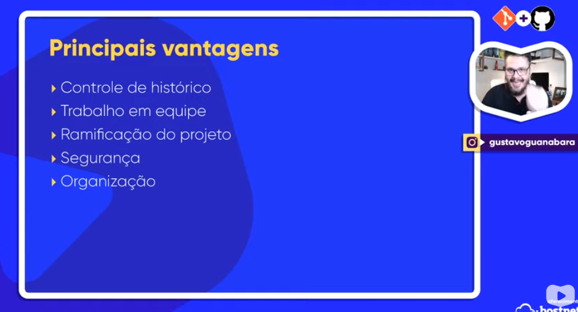

Introdução git
O que é um Git?
É uma ferramenta de versionamento de software
(código), desenvolvido pelo criador do Linux em 2005.
Versionamento - Versão
Exemplo de versionamento:
- Várias salvamentos de um projeto durante o seu desenvolvimento.
- Salvar muitas versões de um projeto em varíos arquivos zip num drive.
Sofware de Controle de Versionamento (VCS):
é melhor usar o VCS pois irá gerenciar os arquivos.
O git é uma máquina do tempo!
O primeiro software de versionamento foi criado em 1972, chamado de centralizado/linear.
O repositório esta em uma central e que os computadores precisam estar conectados diretamente a ela.
Modelo de VCS moderno, usa o modelo distruibuido
Possui o repositório local de todos os arquivos
Possui um repositório REMOTO
O commit envia o arquivo para um repositório central
O push envia o repositório local para um reposiório remoto.
Tipos de Softwares de versionamento:

Principais vantagens:

Página principal